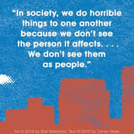
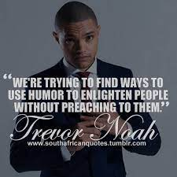
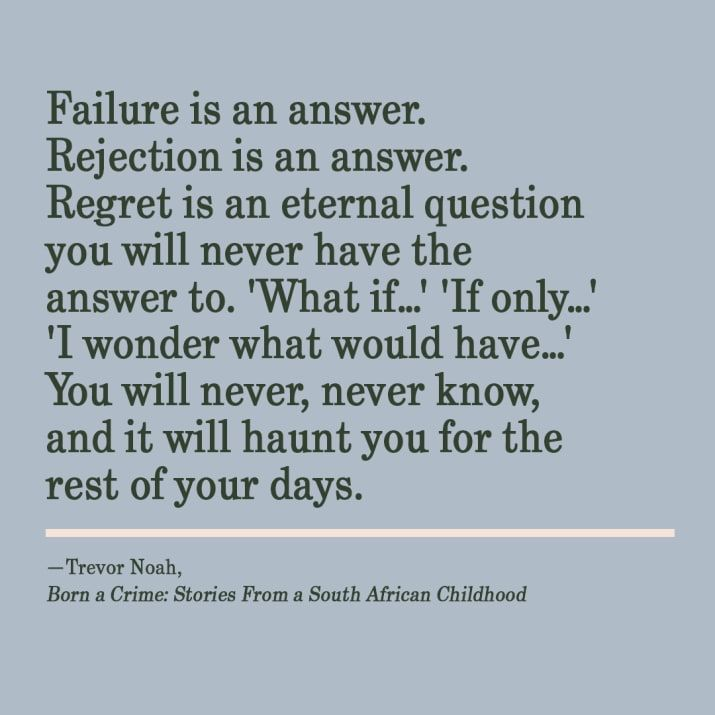

<!DOCTYPE html>
<html>

<head>
    <title>My blog</title>
    <link rel="stylesheet" href="style.css">

</html>

</html>
</head>

<body>
    <nav>
        <div class="topnav">
            <ul>
                <a href="Index.html"></a>
                <li><a href="HOME.html">HOME</a></li>
                <li><a href="ABOUT.html">ABOUT</a></li>
                <li><a href="BLOG.html">BLOG</a></li>
                <li><a href="CONTACT.html">CONTACT</a></li>
            </ul>
    </nav>
    <hr class="line">
    </div>
    </div>
    </head>

    <body>
        <div class="row">
            <div class="column">
        <h1>Blog 1-Marriage</h1>
        <p class="content">
            TREVOR NOAH'S unlikely path from apartheid South Africa<br> to
            the desk of The Daily Show began with<br> a criminal act,
            his birth. Trevor was born<br> to a white Swiss father and a
            black Xhosa mother <br>at a time when such a union was punishable
            by five years in prison.<br>Born a crime is the story of a
            mischevious<br> young boy who grows into a restless young
            man as he <br>struggles to find himself in a world where he
            was never<br> supposed to exist. It is also the story of that
            young<br> man's relationship with his fearless, rebellious and 
            feverently <br>religious mother, his teammates, a woman determined
            to save<br> her son from the cycle of poverty, violence, and abuse
            that would<br> ultimately threaten her own life. Whether subsisting
            or <br>caterpillars for dinner during hard times,being thrown<br>
            from a moving car during an attempted kidnapping, or just <br>trying
            to survive the life and death pitfalls <br>of dating in high school,
            Trevor illuminates his<br> curios word with an incisive wit and unflinching honesty.<br>
            "Trevor thrives with the help of his astonishingly

 "
           </p>
        
        

        
            
        
            <p class="page">

                "Abel wanted a traditional marriage with a traditional wife".<br>
                For a long time, I wondered why he ever married a woman like<br>
                 my mom in the first place, as she was the opposite of that<br>
                  in every way. If he wanted a woman to bow to him, there were<br>
                   plenty of girls back in Tzaneen being raised solely for that<br> purpose.
                    The way my mother always explained it,<br> the traditional man wants 
                    a woman to be <br>subservient, but he never falls in love with subservient <br>
                    women. He’s attracted to independent women. “He’s like<br> an exotic bird collector,” she said. “He only wants<br> a woman who is free because
                     his dream is to put her in a cage."
      
      
        </p>
        
        
       <p class="web"> Patricia was totally the opposite of the woman Abel wanted to marry.<br>
        Abel was raised in Tzaneen where women were raised only for marriage.<br>
        He was a mechanic and he was a very hardworking person that made <br>
     Patricia even thinks he was the right man for her to get married to. She was<br>
     attracted to his hardwood and she thought he was the right man for her in <br>
     that they could combine their efforts to come up with something bigger and<br>
      be successful in life. Patricia gets married to Abel after a long time<br>
       of relationship but this leaves Trevor in a dilemma since it was the<br>
        little he expected from her. I remember after Trevor's father had <br>
        left them Patricia told Trevor she will not get married to another man<br>
         Again. This is what made Trevor even wonder because it seems like Patrica <br>
         had forgotten what she told him before. After their marriage, Trevor is <br>
         the first person to face the consequence.When Trevor forged the mother's <br>
         signature on school documents he says the way Abel punished was so <br>
         It horrifying that he even used to have nightmares. Patricia's business <br>
         starts going down because now Abel is the man of the house. Trevor says<br>
          after Patricia and Abel's marriage, Abel made few reforms where he stoppped<br>
          smoking bhang and started drinking alcohol. This was not a reform I think he was <br>
          graduating to a more harmful person.


        </p>
        <P class="web">
            Abel starts coming home drunk late in the nights making noise everywhere <br>
            and distracting people. He even starts beating Patricia. The first time he bit <br>
            her she goes to the police station but no action was taken against him.<br>
            She is told that is a family issue and they should go home and solve it as a<br>
            Family. The second time he hits her again, this time around the police avails<br>
             themselves to their home. What made me get shocked is that instead of them<br>
               listening to the case they turned the situation into a party. When Abel starts<br>
               a workshop out of the yard Patricia divorces him. In African culture, there's<br> 
               legal marriage just because you divorced someone legally does not mean they<br>
                are no longer your spouse. They were still a family and they were still <br>
                traditionally married but she divorced him in order to separate their financial<br>
                Affairs. She also took her name back. Abel starts running an unlicensed business<br>
                in a residential area, one of the neighbors files a petition to get rid of<br>
                 Patricia's family. Patricia applies for a license to be able to operate a business<br>
                 on the property.
        </P>


        <p class="web">
            The workshop stayed, but Abel kept running it into the ground<br>
            drinking his money. Patricia starts moving up at the real estate<br>
             The company she worked for taking on more responsibility and earning a <br>
             better salary.When Patricia starts making more money and getting<br>
             her independence back Abel emerges again and drinking becomes worse.<br>
             This when he grew more and more violent. He goes ahead and buys a gun<br>
             after sometime. He becomes worse and he even keeps on kicking Trevor out<br>
             of his room at night which forces Trevor to sleep on the couch a<br>
             A couple of times. There is a time he even peed in Trevor's room thinking<br>
              it was a washroom. In the end, Abel shoots Patricia with his gun and leaves<br>
              her unconscious. I found this so terrifying and if this is what women in Tzaneen<br>
              used to go through then marriage was no longer fun. It was something very<br>
              terrifying.</p>


              <p class="web"> As i  conclude i think whatever used to happen to women<br> in Tzaneen
                was not good at all. In the current world am sure there are still women who<br> are going through the same thing. We have to stand and fight for our marriages.<br>Some
                women are even scared of getting married because of what is happening to <br>their
                 friends who are already in marriage. Some men even go ahead being <br>irresponsible and neglecting their families. It is a high time we learn <br>how to build our relationships both at home and workplace. We do not have<br> to live like enemies we have to learn how to speak and defend ourselves.<br>Suffering and keeping quiet does not mean you can not be rescued. Run for your<br> life do whatever makes you happy and stay with people who also make you<br> happy. I would like to hear from you also what do you think about marriage in Tzaneen?
          </p>
  
    </div>
        <!--  -->
        
        <div class="column">
        <h1> Blog 2-Humour</h1>
        <p class="web">
        
            Born a crime is a nice book filled with a mixture of emotions<br>
            both happy and sad moments. It has<br>
            brought a lot of lessons well learned from different incidences.<br>
            The author of this book has used humour throught the book to<br>
            communicate different incidences.As i was reading this book<br>
            i found out that humour was one of his survival tactics.It<br>
            helped him get out of trouble and also saved him in other<br>
            different incidences.Let's see what happened and how he<br>
            managed to get out of all this.</p>
            
            <!--  -->
            

            <p class="web">
                Trevor was such a naughty guy in that  when he was at Maryvale<br>
                The school he used to be punished by the nuns in the school for being<br>
                stubborn and present everywhere. He did not like the way he used to be<br>
                treated during the holy communion times. When the rest were taking<br>
                 wine  and bread, he was an exception since he was not a catholic.<br>
                 He asks if Jesus was a catholic but he is told by the priest that<br> 
                 he was a jew.</p>
  
                <P class="web"> Trevor decides to sneak into the church and stills a<br>
                  bottle of wine and the body of christ this lands him into <br>a big
                   Trouble. He is taken to the principal to <br>be punished and when 
                   the principal hits him Trevor<br> laughs because compared to the way 
                   the mother used to <br>hit him it was so hard. This incident makes
                    the<br> principal  to conclude that Trevor was mentally sick, because<br>
                     he expects a child to cry whenever he has been hit.<br>
                     He calls Trevor's mother to school so that she can take<br> 
                     her son to the hospital for a mental checkup.When the mother<br>
                     heard the incident that made her son be hit she does <br>not agree with
                      it and this is how Trevor was<br> helped to get out of trouble
                       since he was moved<br> to another school.</p>
                       
  
  
            
                       <p class="web">Trevor says back in Soweto nearly ninety-nine point<br> nine percent were black and he was famous <br>in his neighborhood because of his skin color.<br>This sounds so funny in that whenever children would see <br>
                        him they run and yell out "idonda yomulungu" meaning <br>the white man.
                        Some of them would run away others<br> would call their parents to come to look others would<br> touch him to see if he was real which sounded awkward.He<br>
                         even says some had totally no clue what a white person was.</P>
                         
                          
                
                         
                         <P class="web"> Whenever he went to the funeral the bereaved would<br>
                              lookup and see him and them
                          would stop crying.<br>They would start whispering and even say "oh!" like<br>
                          they were more shocked by him walking in than by<br> the death of their
                           beloved ones.People<br> would feel like the dead person was more important<br>
                           because the white person had come to the funeral.<br>His skin color made him
                           gain fame and also<br> make new friends in that children in Soweto would crowd<br>
                           around him not that they had bad intentions but they<br> just wanted to
                            feel how it felt interacting with<br> a white person. He says he was even 
                            used as a<br> landmark people would give directions using him."The <br>house one
                            Makhalima Street. At the corner, you <br>will see a light-skinned boy take
                            a right there".
                         
                   
            </p>   
            
            <p>

            </p>

             


        
            </div>
        </div>
        <hr class="line">
        


    </body>

    </html>